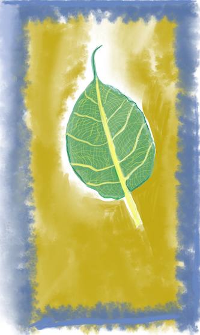
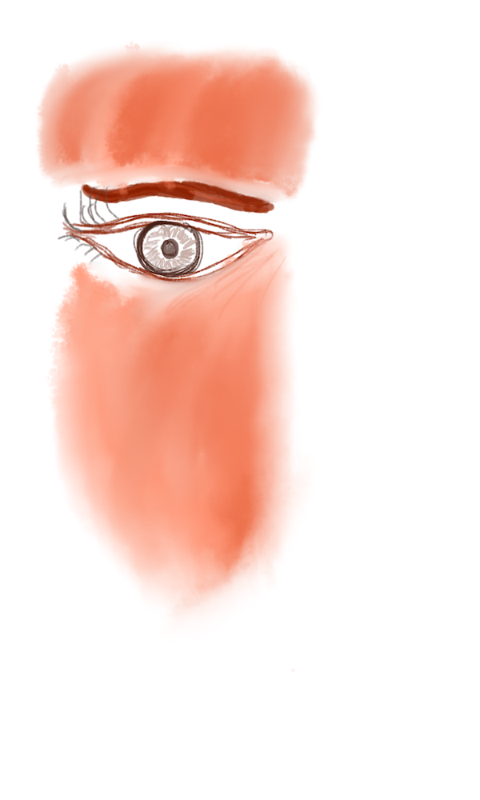

I am originally from Solapur, MH and currently reside in New Delhi. I hold a B.Tech in Electrical Engineering from the Indian Institute of Technology, Madras. After completion of my undergraduate studies in 2020, I began working at Adobe.
In early 2022, I became a machine learning (ML) research associate and have been working on problems in reinforcement learning (RL) and document analysis. Before that, I was in an ML engineering role where I worked on deploying and maintaining ML models for Adobe's Form Conversion service. My current interest lies in researching ways to build deployable RL systems - ensuring the quality of performance, safety during execution, and human interpretability. I have had the fortune to work with Georgios Theocharous and Prof. Nan Jiang on a problem in RL deployability.
In my leisure time, I like to read books, paint, and explore Delhi. My reading list can be found here. Some of my paintings can be found here. And as for my adventurous explorations in Delhi, in the last 5 months (yes, only 5 months!, before that I was working from home), I have visited National Museum, India Gate, Jama Masjid and Connaught Place, and my wishlist is still growing. (Let me know if you too have any suggestions!)
I lllove painting, it brings such a tranquility of mind. Following are some of my works, these are from pandemic period drawn on a tablet. You can find a few more here.

